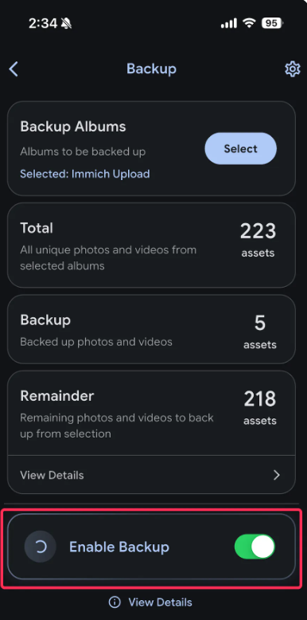

Think about where your photos live right now. Chances are, they’re sitting on Google’s servers, or maybe Apple’s, or Amazon’s. Your documents are in the cloud. Your AI conversations are being processed on servers you’ve never seen, by companies you’ve never met.
You are renting your digital life.
And like any rental, there are terms and conditions. They can change the price at any time. They can change what you’re allowed to do. They can shut the whole thing down overnight. Remember Google Reader? Google Plus? You didn’t own those services, and when they went, your data went with them.
There is another way. It’s called self-hosting, and it’s simpler than you think.

A home server doesn’t need to be big. A small mini PC or even a Raspberry Pi can host a surprising amount of your digital life.
What Is Self-Hosting, Exactly?
Let me put it in the simplest terms I can: self-hosting means running software on hardware that you own, in a place you control.
Instead of storing your photos on Google’s servers, you store them on a small computer in your home. Instead of paying for ChatGPT Plus, you run an AI model on your own machine. Instead of relying on a company’s document service, you run your own.
You become your own IT department.
Now, I know what some of you are thinking. “I’m not a programmer. I barely know how to use the command line.” That’s fine. The self-hosting world has changed dramatically in the last few years. Many of the best tools now have straightforward installers, friendly mobile apps, and active communities that will help you through the process. You do not need to be technical to get started.
Think of it like the difference between renting an apartment and owning a house. When you rent, you pay every month, you can’t paint the walls whatever color you want, and the landlord can sell the place out from under you. When you own, there’s a one-time investment, and after that, it’s yours. You decide what goes in it, how it’s set up, and who gets to visit.
The trade-offs look something like this:
Why Self-Hosting Actually Matters
There are several reasons to consider making the switch, and they all come down to one thing: control.
Your Privacy Is Yours
When you use a free service, the old internet joke applies — if you’re not paying for the product, you are the product. Companies scan your photos to build ad profiles. They analyze your emails to sell targeted advertising. They use your AI conversations to train their models. With self-hosting, none of that happens. Your data stays in your home. Period.
Here’s the practical difference in how your data moves:
No More Subscription Fatigue
Let’s be honest: we are all drowning in subscriptions. A few years ago, you had one or two. Now it’s streaming services, cloud storage, AI tools, password managers, note apps — the list goes on. Each one is “only $10 a month,” but they add up fast. Self-hosting replaces those recurring payments with a one-time hardware cost. After that, the only ongoing expense is electricity, and a small home server uses less power than your television.
No Vendor Lock-In
Companies shut down services all the time. Google Reader was gone in 2013. Google Plus followed in 2019. Various photo and video services have come and gone. When a service shuts down, your data goes with it — or at least, getting it back is a painful, limited-time export process. When you self-host, there is no one to shut it down but you. Your data is on your drives, in a format you can access, forever.
Full Control
You decide what software to run. You decide how to configure it. You decide who has access to your data. There are no surprise terms-of-service updates, no forced upgrades, no algorithmic feeds you didn’t ask for. It works the way you want it to work, because you set it up that way.
You Actually Own Your Data
This is the big one. Your photos, your documents, your AI conversations, your notes — when they live on someone else’s servers, they’re technically theirs to manage, modify, or delete. When they live on your hardware, they’re yours. Full stop.
Real-World Examples: What Can You Self-Host?
Talking about control and privacy is one thing. Let’s get concrete. Here are three tools I use (or recommend) that replace popular subscription services, and they’re all free and open-source.
Immich: Your Own Google Photos
If you have a smartphone, you probably have thousands of photos backed up to Google Photos, iCloud, or some other service. Immich is an open-source, self-hosted alternative that replaces that entire workflow.

Immich’s mobile app provides automatic photo and video backup, just like Google Photos — but your data stays on your own server.
Here’s why it’s impressive:
- Mobile apps for Android and iOS — Install the app, sign in, and it automatically backs up your photos and videos in the background, just like Google Photos does.
- Face recognition — Immich can identify people in your photos and group them together, making it easy to find all the pictures of a specific person.
- Map view — See your photos plotted on a map based on their GPS metadata, just like Google Photos.
- Sharing albums — Create shareable albums and send links to friends and family.
- Search — Search through your library by date, location, people, and more.
- Unlimited storage — You’re limited only by your own hard drives. No “storage full” messages, no compression, no upsell pop-ups.
Immich is open-source under the AGPL v3 license. It runs on Docker, which is a container technology that makes it easy to install and update. You’ll need a machine with at least 6GB of RAM and 2 CPU cores. That’s it. An old laptop, a cheap mini PC, or even a Raspberry Pi 5 can handle it.
Note: Immich is still actively developed and improving rapidly. It’s one of the most popular self-hosted photo projects on GitHub for a reason. If you’ve been frustrated with Google Photos’ storage limits and upsells, this is the alternative to look at first.
Link: immich.app
LM Studio: AI That Never Leaves Your Computer
AI is everywhere now, and most people access it through services like ChatGPT, Claude, or Gemini. Those are great tools, but your conversations go to their servers. Someone, somewhere, could potentially read them. They’re used to train models. They’re subject to the company’s policies and terms of service.
LM Studio lets you run powerful AI language models entirely on your own computer. No API calls. No subscriptions. No one reading your conversations.
LM Studio’s clean interface makes it easy to download, load, and chat with AI models that run entirely on your machine.
Here’s what you need to know:
- Free for home and work use — There is no subscription. Download it, use it, done.
- Runs on Windows, Mac, and Linux — No special setup required. It’s a regular desktop application.
- Supports many models — Qwen, DeepSeek, Gemma, Llama, and dozens of others. You can pick the model that fits your hardware and your use case.
- Everything stays local — Your prompts, your responses, your files — nothing leaves your computer. Not ever.
- Surprisingly capable — Modern local models are genuinely useful. They can help you write, brainstorm, summarize documents, debug code, and much more. The quality gap between local models and cloud services has narrowed dramatically.
The flow is straightforward:
The main trade-off is that local AI depends on your hardware. A more powerful computer with a good GPU will run larger, more capable models. But even a modest laptop can run useful models. LM Studio will tell you which models are compatible with your system, so there’s no guesswork.
Link: lmstudio.ai
Opencode: AI Agents That Work With Your Code
If you’re a developer or someone who works with code, there’s another layer you can add: local AI agents.
Opencode is a project that lets you run AI agents locally. These agents can help you with coding tasks, research, writing, and more — but they use the local language models you have running on your own machine. Your code, your documents, your projects — everything stays on your computer.
This matters if you work with private code, proprietary projects, or anything you wouldn’t want sent to a cloud service. With a local AI agent, there’s nothing to send. The model processes your files locally, understands your codebase, and helps you work — all without a single byte of data leaving your machine.
Here’s what the workflow looks like in practice:
Tip: If you’re new to self-hosting and also new to local AI, I’d recommend starting with LM Studio first. Get comfortable running models locally, then explore agent frameworks like Opencode once you have the basics down.
The Math: Subscriptions vs. Self-Hosting
Let’s talk numbers, because this is where self-hosting really starts to make sense.
Here’s a typical subscription stack for someone who uses cloud services and AI tools regularly:
| Service | Monthly Cost | Annual Cost |
|---|---|---|
| Google One 2TB | ~$10 | ~$100 |
| ChatGPT Plus | ~$20 | ~$240 |
| Additional cloud storage, apps, tools | ~$10-20 | ~$120-240 |
| Total | ~$30-40 | ~$360-580 |
That’s $340 to $460 per year. Over a decade, that’s $3,400 to $4,600.
Now compare that to self-hosting:
| Item | Cost |
|---|---|
| Mini PC (used or budget new) | $150-300 |
| External hard drive (for photos and data) | $50-100 |
| Electricity (rough estimate) | ~$15-30/year |
| Total first year | ~$215-430 |
| Each year after | ~$15-30 (electricity only) |
The payback period is less than a year. After that, you’re spending a fraction of what you would on subscriptions. Over a decade, you’re saving thousands.
And that’s not even counting the privacy, control, and data ownership benefits, which don’t show up on a spreadsheet but are arguably worth more than the money.

A complete home server setup doesn’t take up much space. This kind of setup can host photo backup, local AI, and more.
Getting Started (For Absolute Beginners)
If you’ve read this far and you’re interested but not sure where to begin, here’s my advice:
You Don’t Need Expensive Hardware
This is the most important thing to understand. You do not need a $2,000 server. You do not need a dedicated room full of equipment. You do not need to be a Linux expert.
An old laptop that you’re not using anymore works. A Raspberry Pi works. A cheap mini PC from a used electronics marketplace works. Start with what you have.
I actually run all of this on the desktop I built from spare parts — you can read about that build here. The Ryzen 5 1600 and GTX 1080 Ti handle Docker containers and local AI inference without breaking a sweat.
Start With One Thing
Don’t try to self-host everything at once. Pick one service that you use every day and that frustrates you the most. For most people, that’s photo backup. Start with Immich. Get it running. Use it for a week. See how it feels.
Once you’re comfortable with one thing, add another. Maybe it’s a local AI setup with LM Studio. Maybe it’s a self-hosted note-taking app. Build your self-hosted ecosystem gradually.
The Communities Are Helpful
Every self-hosted project has a community — usually on Discord, Reddit, or GitHub Discussions. These communities are full of people who remember what it was like to be beginners. They will help you troubleshoot, answer your questions, and walk you through the process. Don’t be afraid to ask for help.
Many Tools Have Simple Installers Now
The days of needing to manually edit configuration files and run complex command-line scripts are largely over. Many self-hosted tools now offer one-click installers, Docker-based setups, or even desktop applications (like LM Studio). The barrier to entry has never been lower.
Note: Docker is a technology that packages software into containers, making it easy to install, run, and update. If you hear “Docker” mentioned in self-hosting tutorials, don’t panic. It’s just a tool that makes things easier. There are beginner-friendly guides for installing Docker on Windows, Mac, and Linux.
Conclusion
Self-hosting isn’t about being paranoid or anti-technology. It’s about taking control of your digital life in a world where more and more of it is hosted on servers you don’t own, by companies you don’t control.
The journey from renting to owning doesn’t happen overnight. It starts with one small step — maybe it’s installing Immich to back up your photos, or maybe it’s trying LM Studio to chat with a local AI model. That one step teaches you something, and then you take another.
Before you know it, you have a small computer in your home running services that you control, with data that you own, without monthly fees or terms of service surprises. And there is a real, genuine satisfaction in that. It’s similar to the feeling I get when I build a PC from spare parts — you put something together with your own hands, it works, and it’s yours.
Your digital life is worth owning. Start with one thing, and see where it takes you.
If this post was helpful, I’d love to hear what you’re thinking about self-hosting first. Drop a comment or reach out — I’m always happy to chat about home servers, local AI, and taking back control of our digital lives.